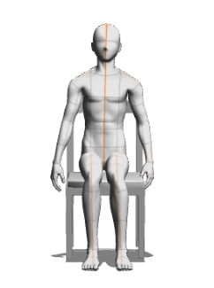

바른 자세란?
책상을 당겨서 앉은키가 가장 크도록 한다. 무릎이 지면과 수평이 되도록, 앉아서 무릎이 90도 정도가 되도록 조정한다.
앉는 면의 길이는 몸을 충분히 지탱해 줄 수 있는, 엉덩이와 무릎까지의 길이에 2cm를 더한 수치가 좋으며, 너비는 엉덩이의 너비에 6~7cm의 여유를 두면 좋다.
책상의 높이는 바른 자세로 앉아 팔을 내렸을 때, 팔꿈치 높이보다 1~2cm 정도 높은 책상이 적당한 데, 팔을 자연스럽게 올렸을 때, 팔꿈치가 90도를 유지하는 것이 좋다.

